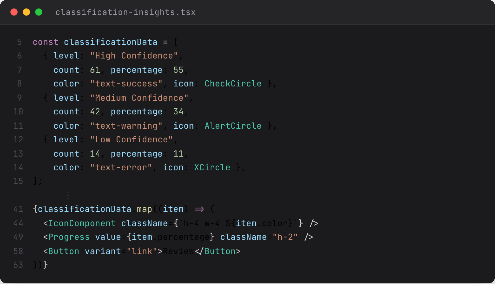

From a percentage to a decision.
The Computis classification surface — confidence as decision-routing.
Before — raw confidence scores
TRANSACTION
CLASSIFICATION
CONF.
BTC → ETH swap
Trade
0.82
USDC inbound
Income
0.67
Wallet transfer
Non-taxable
0.91
Staking reward
Income
0.43
NFT acquisition
Investment
0.71
What did 0.67 mean in dollars at risk? She invented her own threshold. So did everyone else.
After — confidence-banded decisions

Asset placeholder
computis-classification-insights.png
Source: computis-app/client/components/transactions/classification-insights.tsx — live render at projection scale
High Confidence61 · 55%
Medium Confidence42 · 34%
Low Confidence14 · 11%
Same data. The model still computes the percentage. The surface translates it into three decisions: accept in bulk, review individually, escalate.
If it recurs, it needs a noun in the URL.
Anomalies were toast notifications. They were invisible by Tuesday. Now they're a routed triage queue.

Asset placeholder
computis-anomaly-route.png
Source: computis-app/client/components/data-anomaly-detection/ — table view with priority, status, affected-transactions columns visible
I write the React.
49 components on Radix primitives — the design system and the code that renders it are both mine. Same source data, two representations.
Figma — what the user sees

Asset placeholder
figma-classification-insights-clean.png
Run build-slide13-assets.py to generate this (border-cropped from figma-classification-insights.png).
React — the code I wrote

Asset placeholder
code-classification-insights-dark.png
Run build-slide13-assets.py to generate this dark-theme render of classification-insights.tsx.
The same primitive — across fourteen features.
Confidence belongs on the output, not on the feature page.
Peripheral
symplify-triage-badge.png
TriagePriorityBadge

Hero asset
symplify-ai-assistant-popup-large.png
Source: Symplify-1.7.4/src/feature-module/components/ai/ — full AIAssistantPopup at high fidelity, ConfidenceIndicator and HIPAABadge clearly visible
Peripheral
symplify-severity-badge.png
Drug interaction SeverityBadge

Peripheral
symplify-urgency-indicator.png
MessageUrgencyIndicator

Peripheral
symplify-confidence-indicator.png
ConfidenceIndicator in another surface